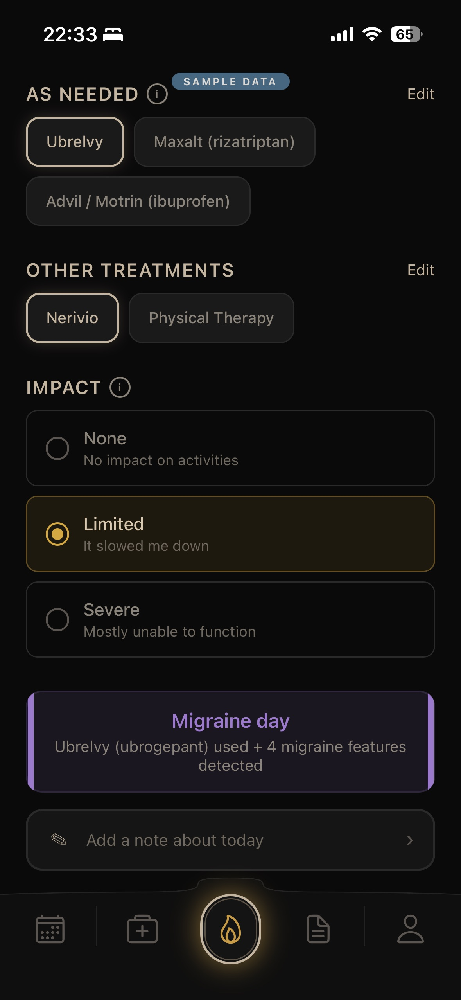
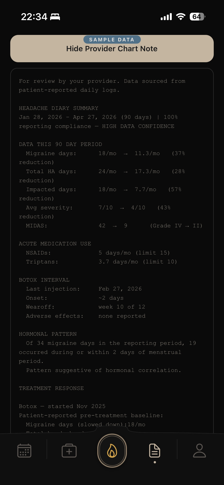
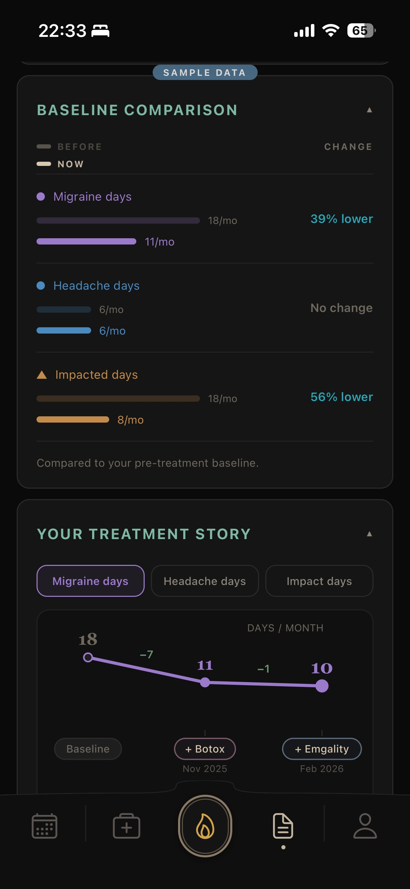
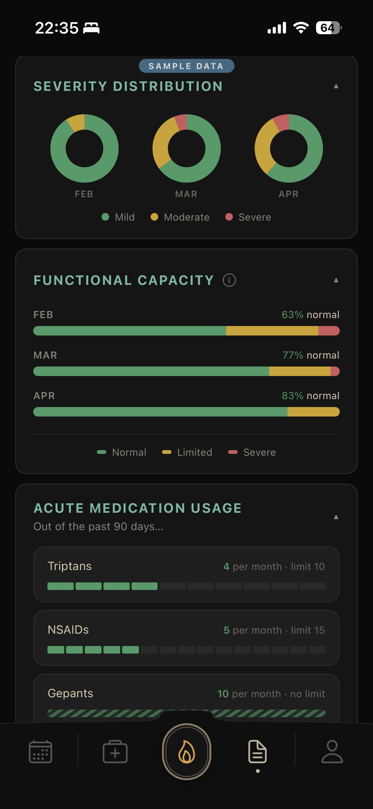

For headache providers
A migraine tracker built around how you document.
Your patient logs symptoms in the evening. Ember produces a clean patient summary they can hand you before the visit — or send through their portal.
Symptoms, not classifications.
Patients can’t always distinguish a headache from a migraine. So Ember doesn’t ask them to. Each day is classified using ICHD‑3 criteria from logged symptoms and medications.
The patient sees plain language.
You get real data.

Built for documentation
Ember’s Chart Note is clinical output, ready to paste into your EHR. Migraine days and headache days split the way that makes sense to a specialist and that payers like to see for prior auth’s: Frequency, severity, disability, medication usage, treatment response.
Designed around the rolling window most insurers require for prior authorization review.

See what each treatment is doing
When patients are on overlapping preventives, Ember separates each medication’s contribution to the patient’s response. If a patient adds Botox to an existing CGRP regimen, you can see what each is actually doing, not the combined improvement credited to whichever was started last.

Rebound monitoring, built in.
Acute medication use is tracked against ICHD-3 overuse thresholds. Patients see warnings as they approach limits and know to bring it up with you before their visit.

A note on scope
A documentation tool.
Not a decision‑support tool.
Ember reports what the patient logged, with structure. The clinical calls are still yours.
- Classifies each day against ICHD‑3 from logged symptoms
- Splits migraine days, headache days, MIDAS, severity
- Tracks acute medication use against overuse thresholds
- Separates each preventive’s contribution to response
- Recommend or change treatment
- Flag drug interactions
- Decide what counts as a rebound headache
- Replace your clinical judgment, ever
Local-only architecture
All patient data stays on the patient’s device.
Ember has no backend that stores PHI. Patients share their summaries through whatever channel they choose — patient portal, email, print.
We’re in beta. We want headache specialists in it.
Your patients get a working app. You get a tool that’s still shaped by the clinicians using it.
Beta access by request. We’ll send a TestFlight invite and a few questions about your practice.